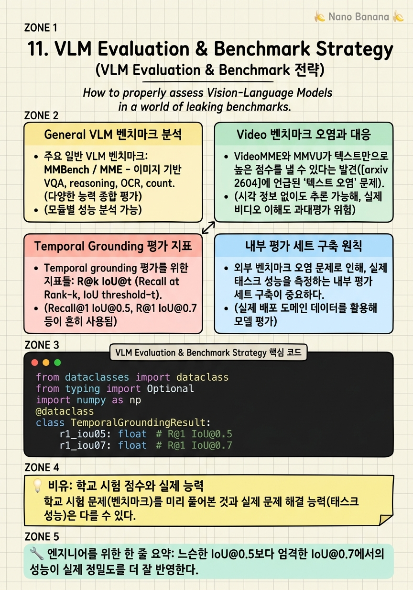

VLM Evaluation & Benchmark Strategy

🎯 학습 목표
- 주요 VLM/Video 벤치마크(VideoMME, MMVU, QVHighlights, Charades-STA)의 특성과 한계를 설명할 수 있다
- 벤치마크 오염(텍스트 편향) 문제를 탐지하고 정량화하는 방법을 설명할 수 있다
- Temporal grounding 평가 지표(R@k IoU@t, mIoU, mAP)를 계산하고 해석할 수 있다
- 내부 평가 세트 구축의 원칙과 방법을 제시할 수 있다
- 모델 선택 시 벤치마크 점수와 실제 성능의 gap을 고려하는 방법을 설명할 수 있다
벤치마크 점수는 모델 개발의 중요한 신호지만, 점수 자체가 목표가 되어선 안 된다. 특히 2026년 발견된 비디오 벤치마크의 광범위한 텍스트 편향 문제([arxiv 2604.05117](https://arxiv.org/abs/2604.05117))는 인기 벤치마크에서 높은 점수를 얻는 것이 실제 시각 이해 능력을 보장하지 않는다는 것을 보여준다.
효과적인 VLM 평가는 세 가지 레벨에서 이루어져야 한다. (1) 표준 벤치마크: 커뮤니티 비교와 논문 발표에 필요. (2) 내부 태스크 특화 평가: 실제 사용 사례를 반영한 평가 세트. (3) 실패 분석: 모델이 틀리는 사례의 패턴 분석.
이 챕터에서는 주요 벤치마크의 특성과 한계를 이해하고, 자체 평가 시스템을 구축하는 방법을 다룬다.
핵심 내용
General VLM 벤치마크 분석
주요 일반 VLM 벤치마크:
MMBench / MME - 이미지 기반 VQA, reasoning, OCR, counting 등 다양한 카테고리 - MCQ 형식으로 자동 평가 용이 - 한계: 단순 yes/no나 단답형 질문 위주
MMMU - 대학 수준 멀티모달 이해 (과학, 의학, 예술 등) - 전문 지식 필요, 단순 pattern matching 통하지 않음 - 더 엄격한 이해 평가
DocVQA - 문서 이미지 이해 (영수증, 보고서, 양식 등) - OCR + 문서 이해 능력 평가 - 고해상도 모델에 유리
HallusionBench - 시각적 환각 탐지에 특화 - 이미지에 없는 물체를 있다고 하는 경우 탐지 - 신뢰성 평가에 중요
Video 벤치마크 오염과 대응
VideoMME와 MMVU가 텍스트만으로 높은 점수를 낼 수 있다는 발견([arxiv 2604.05117](https://arxiv.org/abs/2604.05117))은 비디오 벤치마크 설계의 근본적 문제를 드러낸다.
텍스트 편향 측정 방법:
`python
# 자체 벤치마크의 텍스트 편향 측정
def measure_text_bias(benchmark_samples, judge_model):
correct_without_video = 0
total = len(benchmark_samples)
for sample in benchmark_samples:
# 비디오 없이 질문 + 선택지만으로 답 생성
response = judge_model.answer(sample['question'],
options=sample['options'],
video=None)
if response == sample['answer']:
correct_without_video += 1
text_bias_rate = correct_without_video / total
return text_bias_rate # 40-60%이면 심각한 오염
`
오염이 낮은 벤치마크 특성:
- 질문이 비디오의 특정 시각적 detail에 의존 - 텍스트 상식으로 추론 불가능한 질문 - Temporal 순서나 동작 인식 필요
권장 벤치마크: Video-MME의 '시각 의존 부분'만 선별하거나, NExT-QA(temporal causal reasoning 강조)를 대안으로 사용.
Temporal Grounding 평가 지표
Temporal grounding 평가를 위한 지표들:
R@k IoU@t (Recall at Rank-k, IoU threshold t) - R@1 IoU@0.5: top-1 예측이 IoU ≥ 0.5인 경우의 비율 - R@1 IoU@0.7: 더 엄격한 버전, IoU ≥ 0.7 - 실전에서 IoU@0.7이 더 신뢰할 수 있는 지표
mIoU - 모든 테스트 샘플의 Temporal IoU 평균 - 전반적 정확도 측정, 극단적 실수에 더 민감
mAP (mean Average Precision) - 여러 IoU threshold에서의 AP를 평균 - 하이라이트 검출이나 다중 이벤트 탐지에 사용
계산 예시:
`
예측: [12.0, 24.0], 정답: [12.5, 24.8]
Intersection: min(24.0, 24.8) - max(12.0, 12.5) = 24.0 - 12.5 = 11.5
Union: max(24.0, 24.8) - min(12.0, 12.5) = 24.8 - 12.0 = 12.8
IoU = 11.5 / 12.8 = 0.898 → IoU@0.7 통과 ✓, IoU@0.9 미통과 ✗
`
Temporal Grounding 평가 순서: single interval에서 R@1 IoU@0.5/0.7 → mIoU → Charades-STA → QVHighlights 순으로 평가 난이도 증가.
내부 평가 세트 구축 원칙
외부 벤치마크 오염 문제로 인해, 실제 태스크 성능을 측정하는 내부 평가 세트 구축이 중요하다.
설계 원칙:
*1. 실제 사용 케이스 반영*: 실제 사용자가 요청하는 유형의 질문을 포함. 편집된 시나리오가 아닌 실사 예시를 사용.
*2. 오염 방지*: 훈련 데이터와 겹치지 않는 소스. Temporal split(최신 데이터 사용) 또는 domain split 사용.
*3. 다양성 확보*: 비디오 도메인(스포츠, 음식, 인터뷰 등), 쿼리 유형(시작/종료 분리, 짧은/긴 이벤트), 비디오 길이 균형.
*4. 자동 평가 가능한 형식*: 자동으로 채점 가능한 포맷 설계. Temporal grounding은 IoU로 자동 채점, VQA는 MCQ로 자동 채점.
*5. 크기*: 통계적으로 유의미하면서도 평가 비용이 허용 가능한 크기. 보통 500-2000 샘플.
평가 Anti-patterns
VLM 평가에서 피해야 할 반패턴:
Anti-pattern 1: 단일 벤치마크 의존 하나의 벤치마크에서 높은 점수를 얻는 것을 목표로 최적화하면 다른 태스크에서 성능이 떨어지는 Goodhart's Law 현상이 발생한다.
Anti-pattern 2: 훈련 데이터와 벤치마크 오염 공개 벤치마크(Charades-STA, ActivityNet)의 테스트 셋이 훈련 데이터에 포함되면 성능이 과장된다. 항상 사용한 데이터 소스와 벤치마크의 overlap을 확인해야 한다.
Anti-pattern 3: 텍스트 편향 무시 비디오 없이도 높은 점수를 내는 모델이 '시각을 잘 이해하는 모델'로 오해될 수 있다. 반드시 비디오-absent 점수를 함께 측정해야 한다.
Anti-pattern 4: 정성 평가 부재 정량 지표만으로 판단하면 모델의 질적 차이를 놓친다. 정기적인 샘플 리뷰(human evaluation)를 병행해야 한다.
Anti-pattern 5: 한 가지 task만 평가 Temporal grounding SFT 후 일반 VQA 성능 저하를 측정하지 않으면 forgetting 문제를 놓친다.
💡 비유로 이해하기
벤치마크 오염 문제는 시험지를 미리 보고 외운 학생이 높은 점수를 받는 것과 같다. VideoMME에서 48.2%를 텍스트만으로 맞추는 것은, 수학 시험에서 풀이 없이 '보기 3번이 자주 정답이다'라는 패턴으로 점수를 올리는 것과 같다.
진짜 능력을 측정하려면 매번 새로운 문제를 출제해야 한다 — 이것이 내부 평가 세트의 역할이다. 현실 세계의 다양한 상황에서 직접 테스트하는 것이 벤치마크 점수보다 신뢰할 수 있다.
단일 벤치마크 최적화는 한 과목만 열심히 준비하는 것이다. 대학 입시에서 수학만 잘해서 다른 과목을 소홀히 한 학생이 수능에서 실패하는 것처럼, 특정 벤치마크에 과적합된 모델은 실제 사용 시 많은 케이스에서 실패한다.
💻 코드 예시
Temporal grounding 평가의 완전한 구현이다. R@1 IoU@0.5/0.7, mIoU를 계산하고 텍스트 편향 비율도 함께 측정한다.
from dataclasses import dataclass
from typing import Optional
import numpy as np
@dataclass
class TemporalGroundingResult:
r1_iou05: float # R@1 IoU@0.5
r1_iou07: float # R@1 IoU@0.7
miou: float # mean IoU
text_bias_rate: Optional[float] = None # 텍스트만으로 답 가능 비율
def temporal_iou(pred, gt):
inter = max(0, min(pred[1], gt[1]) - max(pred[0], gt[0]))
union = max(pred[1], gt[1]) - min(pred[0], gt[0])
return inter / union if union > 0 else 0.0
def evaluate_temporal_grounding(
predictions: list[dict], # {"query": ..., "pred": [start, end]}
ground_truths: list[dict], # {"query": ..., "gt": [start, end]}
text_preds: list[dict] | None = None, # 텍스트만으로 예측한 결과
) -> TemporalGroundingResult:
ious = []
r1_05_hits, r1_07_hits = 0, 0
n = len(predictions)
for pred, gt in zip(predictions, ground_truths):
iou = temporal_iou(pred["pred"], gt["gt"])
ious.append(iou)
r1_05_hits += int(iou >= 0.5)
r1_07_hits += int(iou >= 0.7)
# 텍스트 편향 측정 (선택적)
text_bias_rate = None
if text_preds is not None:
text_correct = 0
for t_pred, gt in zip(text_preds, ground_truths):
iou = temporal_iou(t_pred["pred"], gt["gt"])
text_correct += int(iou >= 0.5)
text_bias_rate = text_correct / n
return TemporalGroundingResult(
r1_iou05=r1_05_hits / n,
r1_iou07=r1_07_hits / n,
miou=np.mean(ious),
text_bias_rate=text_bias_rate,
)
# 사용 예시
predictions = [{"pred": [12.0, 24.0]}, {"pred": [5.0, 15.0]}, {"pred": [0.0, 30.0]}]
ground_truths = [{"gt": [12.5, 24.8]}, {"gt": [6.0, 14.0]}, {"gt": [1.0, 25.0]}]
result = evaluate_temporal_grounding(predictions, ground_truths)
print(f"R@1 IoU@0.5: {result.r1_iou05:.3f}")
print(f"R@1 IoU@0.7: {result.r1_iou07:.3f}")
print(f"mIoU: {result.miou:.3f}")temporal_iou는 예측 구간과 정답 구간의 시간 overlap을 측정한다. r1_05_hits와 r1_07_hits는 각각 IoU≥0.5와 IoU≥0.7 기준을 통과한 예측 수다. text_bias_rate는 비디오 없이 텍스트만으로 IoU@0.5를 달성한 비율로, 이 값이 높으면 평가 데이터가 텍스트 편향이 있음을 시사한다.
🏭 현업에서의 평가
✅ 시니어가 보는 것
- 벤치마크 텍스트 편향 문제를 인식하고 측정 방법을 제시하는 능력
- R@1 IoU@0.5와 IoU@0.7의 차이가 실전에서 어떤 의미인지 설명하는 능력
- 훈련 데이터와 벤치마크 오염 검사 방법
- 내부 평가 세트 설계 원칙과 샘플 수 결정 방법
⚠️ 레드 플래그
- 단일 벤치마크 점수만 보고 모델 성능을 판단하는 경우
- 텍스트 편향 없이 비디오 벤치마크 점수가 높으면 좋은 모델이라고 생각하는 경우
- 훈련 데이터와 테스트 세트 overlap을 확인하지 않는 경우
- 정성 평가(human eval) 없이 자동 지표만으로 최종 결정을 내리는 경우
🎤 예상 인터뷰 질문
- 여러분의 temporal grounding 모델이 Charades-STA에서 좋은 점수를 얻었는데 실제 사용 시 성능이 낮았다면 어떻게 원인을 분석하겠나요?
- 비디오 벤치마크에서 텍스트 편향 비율을 측정하고 싶다면 어떤 방법을 사용하겠나요?
- Temporal grounding 내부 평가 세트를 새로 구축한다면 무엇을 포함하겠나요?
✨ 핵심 요약
R@1 IoU@0.7이 가장 신뢰할 수 있는 grounding 지표
느슨한 IoU@0.5보다 엄격한 IoU@0.7에서의 성능이 실제 정밀도를 더 잘 반영한다.
VideoMME 48.2%, MMVU 57.1%가 텍스트만으로 답 가능
높은 벤치마크 점수가 시각 이해를 보장하지 않는다. 반드시 텍스트 편향 비율을 함께 측정해야 한다.
훈련-테스트 오염 검사는 필수
공개 벤치마크의 테스트 세트가 훈련 데이터에 포함되면 점수가 과장된다. 소스 레벨 overlap 검사 필수.
내부 평가 세트 500-2000 샘플이 실용적 범위
통계적 유의성과 평가 비용의 균형. 실제 사용 케이스를 반영하고 오염이 없는 데이터.
단일 벤치마크 최적화는 Goodhart's Law
하나의 지표를 최적화하면 다른 능력이 희생된다. 다양한 벤치마크와 실사 평가를 병행해야 한다.
Task-specific forgetting 모니터링 필수
SFT 후 일반 VQA 성능 저하를 추적하지 않으면 forgetting 문제를 놓친다.
정성 평가 병행이 신뢰도 높임
자동 지표만으로 판단하지 말고 정기적인 샘플 리뷰로 질적 차이를 확인한다.